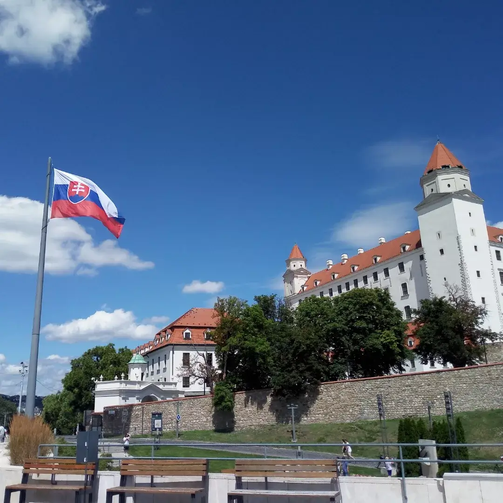

Bratislava Castle
Slovakia · Bratislava
Standing on a hill overlooking the Danube River, Bratislava Castle is one of the most recognizable landmarks of Slovakia's capital. Its distinctive silhouette, white walls and four corner towers make it an important part of the city's skyline. With a history stretching back many centuries, the castle reflects Bratislava's rich cultural and historical heritage.
Walking around the castle offers beautiful views of Bratislava, the Danube and the surrounding landscape. During my visit, I enjoyed exploring this historic landmark and capturing its architecture and impressive surroundings.
My Photo Gallery
Explore my personal travel photos from Bratislava Castle.
View All Photos ↗